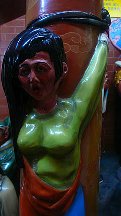

九龍の片隅にある珍寺、慈雲閣。
そのグロッタの一画にあった人工洞窟。入口には地蔵府とある。
地蔵府とはズバリあの世のことだ。
あの世の洞窟、つまりあんな事やこんな事が繰り広げられている、私が大好きなアレでしょう。ウッシッシ…
恐る恐る中へ入ってみる。
中もグロッタ風味なのか。
と、思ったら、いきなりすっきりしたタイル張りの階段。
しかしその階段沿いに延々と地獄の光景が展開されている。やった〜！
天国への階段ならぬ地獄への階段
さあ、それでは新年早々ご覧いただきましょう。阿鼻叫喚のファンキーパーティーを！
新円月殺法煉り潰し。
皆さん何故か褐色のお肌。
これはこの世の人ではない、つまり現世にいる我々とは違う存在だ、という事のメタファーなんだと思うのだが、島で遊んで来ました的な肌ツヤの良さは一体何？
|  | ||
閻魔様の裁きで罪人となれば |
女性とて容赦など |
いたしません。 |
…それにしても何だろうこのアンダーな感じ…
作り手のセンスなのだろうが、激しい責め苦に大絶叫して、みたいなポジティヴな表現ではなく陰にこもった傷みの表現。
皆さん微妙に恍惚の表情とか浮かべちゃってるし。
えええ！そういう事？こいつらドMなのか？彼らにとってはある意味天国なのか…
皮を剥がれたり、腸を引きずり出されたり、も超ハードプレイの一環なのか？
珍を珍で突かれてますね。
髪の毛を縛られるのもヤなもんですな。

この地獄で一番凄い表情のアナタにベスト責め苦賞をさしあげたい。
苦いお薬だけど（亡者の胆汁だと思います）我慢して飲んでね。
人間の廃墟
冥府のお供、謝将軍もビックリの残虐シーン
薄暗い階段で全体的に暗いトーンの色使いの地獄シーンだったので見終わった後かなりイヤ〜な感蝕がまとわりつく。
こう言っては何だが、この手の立体地獄って血飛沫がビャーで肉片がビャーで脳漿がビャーな感じが多いので、見終わった後に意外とスッキリするのだが（それもどうかと思うが）、ここの地獄はそういったハッピーなテイストが感じられない。
なんだろう、この粘着質な地獄。マジで造りすぎた、ということなのだろうか。
ドヨ〜〜〜〜〜〜ン…
で、気を取り直して外に出る。
階段を上っただけあって、先程いた場所よりも見晴らしがよい。
細かい高低差、入り組んだ階段とフロア、幾つかの建物がくっ付いてたり離れたり。
しかも人工物と自然物も複雑に絡み合っていてちょっとした迷路のようになっていて面白い。
見下ろすと先程見上げていた垂直グロッタが眼下に。
そのグロッタの裏手の階段を下りていく。
↓の画像右に見える階段がそれ。
枝道脇道に迷いながらも何とか出口に到着。
ガラスに納まった神様の列を過ぎると先程の龍の東屋に出る。ここを基点に時計回りに一回りしてきたことになる。
よく考えてみればそんなに大きな寺でもないのにかなり時間がかかった。
勿論途中の地獄階段でかなりの時間を要したのが主な原因であるが、そのほかにも色々な見所や小部屋、祠などが次から次へと現れ、それらを一々見ていたので時間がかかった、というわけ。
あれこれ迷いながらも結局1周出来てしまうことを考えると、この寺全体がまるでテーマパークのアトラクションのように念入りに動線が設定されているのだろう。
東屋から下の道を見下ろしたら植え込みも龍だったんですね。
次のお寺にＧＯ！